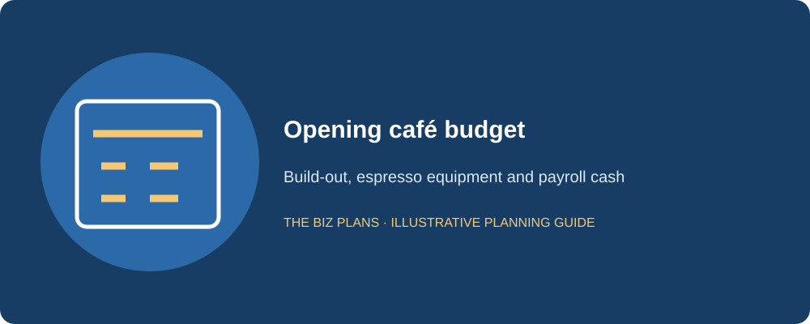
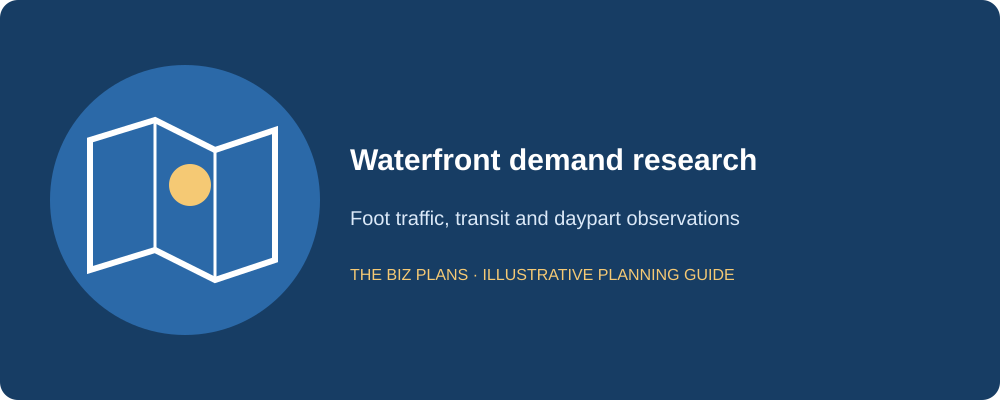
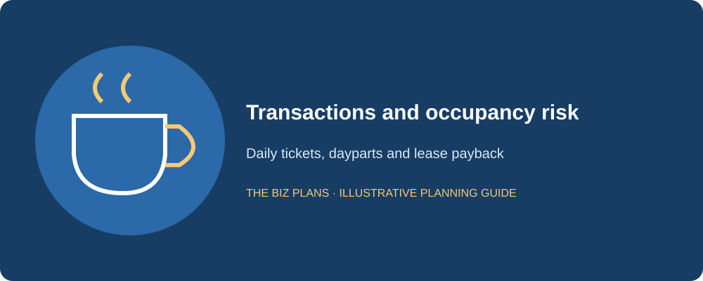
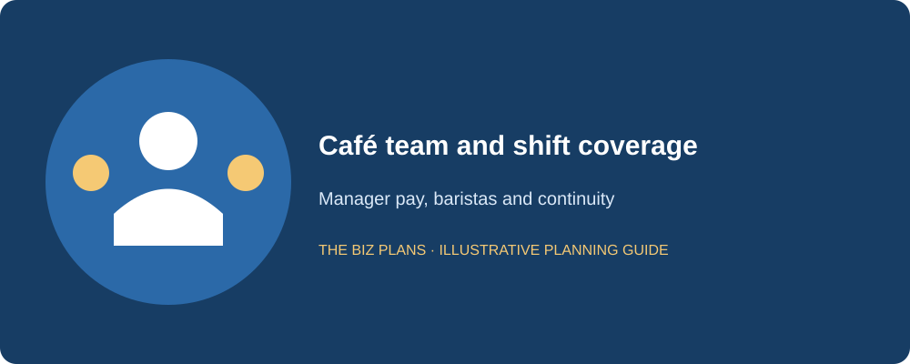
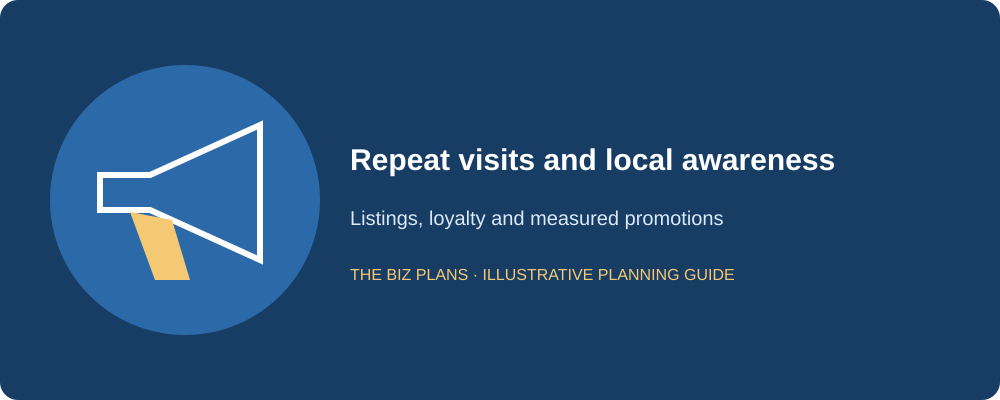
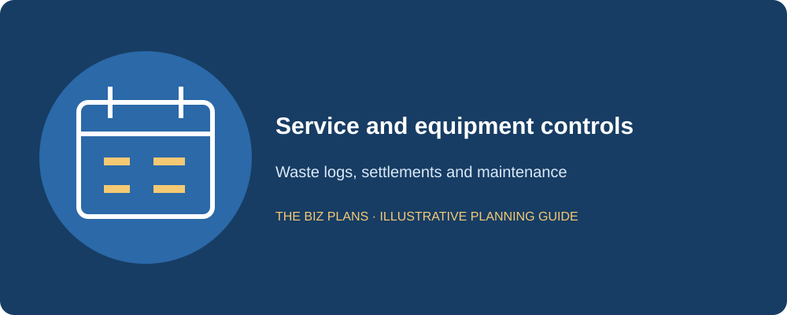
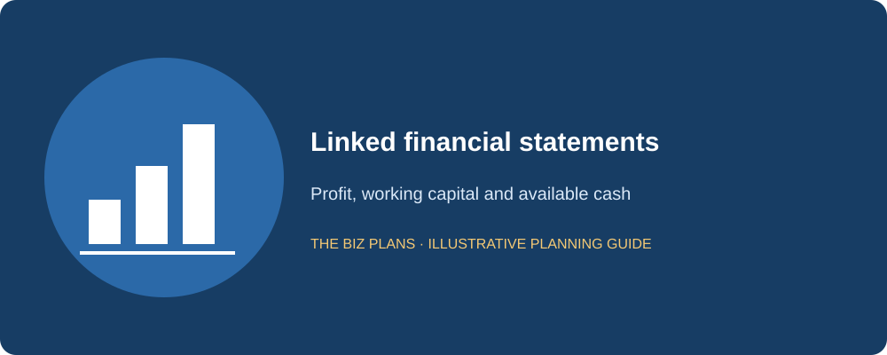

This coffee shop business plan sample follows Harbourfront Coffee Co., a fictional 900-square-foot specialty café near Toronto’s waterfront serving commuters and remote workers. The fictional founder is a former café manager with nine years of specialty-coffee experience. Sample sections are followed by italic practitioner notes explaining what a lender needs to verify. The plan connects the morning-service promise to equipment, staffing, occupancy costs and the cash required before regular customers develop.
Use this guide to question the model before committing to a premises. A busy-looking coffee counter does not prove a lease is affordable, and a good beverage margin does not establish that the shop earns enough after payroll and debt. The page includes an itemized opening budget, average-ticket and daypart assumptions, a lower-volume case, three linked statements and a cafe business plan template checklist. Replace every illustrative number with observations, quotations and costs from your own location, then check that the operating schedule and forecast describe the same business.
All company details and financial figures in this sample are illustrative examples showing plan structure — not market data, and not forecasts for any real business.
How to use this sample
- Read the annotations to understand what a lender or investor checks in each section.
- Swap in your actual quotations, customer research and operating assumptions; recalculate the linked statements.
- Do not submit a fictional sample to a lender. Use business plan writing services to develop an application based on your business.
Start with location feasibility and a service-capacity worksheet. Confirm that the premises can support the equipment, electrical load, plumbing, refrigeration and guest circulation. Observe the proposed trade area at opening, lunch and afternoon times on several days. A single busy morning cannot justify the same volume across every hour or season.
How much does it cost to open a coffee shop in Canada?
For Harbourfront’s fictional premises, the illustrative range is $130,000–$210,000, with an illustrative $170,000 base budget. This is a planning scenario, not a national average. Existing food-service fittings may lower some costs, while major plumbing or electrical work may raise them. Obtain contractor and equipment quotes before setting the financing request.
| Use of funds | Illustrative amount |
|---|---|
| Leasehold improvements | $60,000 (illustrative) |
| Espresso machine and grinders | $25,000 (illustrative) |
| Brewing equipment | $6,000 (illustrative) |
| Furniture and fixtures | $12,000 (illustrative) |
| Point-of-sale system | $3,000 (illustrative) |
| Signage | $4,000 (illustrative) |
| Initial beans, milk and pastry inventory | $5,000 (illustrative) |
| Deposits and prepayments | $5,000 (illustrative) |
| Licence and training allowance | $2,000 (illustrative) |
| Launch marketing | $4,000 (illustrative) |
| Working capital: three months rent and payroll bridge | $39,000 (illustrative) |
| Contingency cash | $5,000 (illustrative) |
| Total | $170,000 (illustrative) |
The illustrative $39,000 working-capital reserve includes $12,000 for three months of base rent and $27,000 for payroll support. It is a reserve contribution, not another set of expenses recognized at opening. The separate illustrative $5,000 contingency should remain available for specific approved overruns rather than decorative additions.
Compare purchasing and leasing the espresso machine using installed cost, service response, maintenance responsibilities, deposits and end-of-contract obligations. This sample assumes the equipment is purchased; a lease alternative must replace the asset cost, depreciation and debt assumptions with the actual agreement. Leasing may reduce initial cash use while increasing recurring commitments. Test both versions instead of describing a lease as free equipment.

The lender looks for a complete installed budget and a reserve that survives opening delays; equipment lease payments must appear in whichever scenario you choose.
Are coffee shops profitable?
They can be, but profitability depends on transaction volume, realized ticket size, product mix, staffing and occupancy costs. This sample assumes illustrative beverage gross margin of 68% and food gross margin of 50%, with revenue illustratively 80% beverages and 20% food. The blended gross margin is 64.4%, not 68% on every sale. These are model assumptions, not sourced industry averages.
Illustrative Year 1 revenue of $380,000 produces illustrative net profit of $13,447 after operating costs, interest, depreciation and the simplified tax provision. The owner-manager’s illustrative $48,000 salary is already part of labour cost. Net profit is retained by the company, with no additional owner dividends assumed. The model therefore does not promise a particular personal income or imply that all business profit can be withdrawn.
At an illustrative 80% of planned transaction volume with the same ticket and mix, revenue falls to $304,000. If annual labour, rent and other operating costs stay unchanged, illustrative EBITDA becomes negative $12,224 before interest and depreciation. The sensitivity reveals that reducing staffed hours, improving ticket contribution or adding equity may be necessary; an attractive coffee margin alone does not protect the café from a volume shortfall.
Sample executive summary
Harbourfront Coffee Co. will be a fictional 900-square-foot specialty café near Toronto’s waterfront, serving commuters and remote workers with dependable coffee, a compact food range and a comfortable setting. I founded the concept after nine years in specialty coffee, including café management, barista training and shift scheduling. The initial offer will emphasize consistent preparation, fast morning service and clear product information rather than a large menu that complicates a small counter.
We will build the opening schedule around measured demand by daypart. Morning takeaway orders will be served through a defined queue, while quieter periods will offer seating without assuming every occupied table produces frequent purchases. Our location assessment will examine foot traffic, nearby workplaces, transit access and seasonal changes. Customer interviews and repeated observations will guide the menu, staffing and opening hours before the lease becomes unconditional.
The illustrative opening budget is $170,000, funded by a $110,000 term loan and $60,000 owner equity. Illustrative revenue rises from $380,000 in Year 1 to $560,000 in Year 3 through repeat visits and improved service capacity. We will track transactions, average ticket, waste, labour and cash daily. The owner-manager and a trained shift lead will share operating knowledge, and a service agreement will support essential equipment. Loan repayment will come from operating cash after suppliers, payroll and taxes, with a lower-volume case defining the actions needed if the opening ramp disappoints.
A lender reads for an experienced operator, measurable daily sales assumptions and a repayment case that still acknowledges thin cash headroom.
Sample market analysis
Our fictional trade area combines waterfront residents, nearby employees and commuters moving through the neighbourhood. We hypothesize that customers will choose Harbourfront for dependable specialty coffee and a convenient morning visit. Remote workers may create afternoon demand, but a seat occupied for several hours does not equal several transactions. The plan must test these customer groups separately rather than assume one price and frequency suits everyone.
Research will include repeated pedestrian observations, competitor visits by daypart and customer interviews about current habits. We will record weather, weekday or weekend, observation period and limitations. Transit proximity is a location characteristic to investigate, not proof of captured customers. The real plan should compare nearby coffee shops, convenience outlets, office coffee and the choice to bring a drink from home.
The forecast will build from daily transactions and realized tickets. Any capture-rate assumption must use the pedestrians who could reasonably enter, not every person in a broad district. A small pilot or pop-up may test the offer where permitted, but the chosen premises still require site-specific research. This sample makes no quantitative claims about Toronto commuter counts, remote-work trends or coffee-market growth.

Reviewers want observations tied to the proposed entrance and service periods, with a defensible capture assumption rather than generic neighbourhood popularity.
Build a location-specific café plan
Connect your lease, equipment quotes and foot-traffic observations to a lender-ready forecast.
Explore business plan servicesWhat makes a coffee shop plan different?
Rent needs a revenue denominator. Illustrative Year 1 base rent of $48,000 equals about 12.6% of illustrative $380,000 revenue. This does not include unlisted additional rent or imply an industry affordability benchmark. The actual lease must identify all occupancy payments. A busy shop with a fixed expensive lease can still fail its debt payments.
Dayparts drive payroll. Our illustrative Year 1 sales split is 55% morning, 25% midday and 20% afternoon: $209,000, $95,000 and $76,000 respectively. Shift staffing must follow that distribution and the service work needed, not an assumption of uniform queues. The manager will test a shorter quiet-period roster while preserving safe opening, closing and breaks.
Small tickets require frequency. With an illustrative $8.50 ticket before HST and 360 trading days, $380,000 requires about 124 transactions daily. An illustrative ramp from 80 to 125 to 150 transactions over successive four-month blocks averages about 118 daily and generates $362,100. That ramp falls short of the annual target. To reach $380,000, the last block must average about 168 daily; the lender should see the evidence for that stronger ramp, or the annual target should be lowered.
Lease term must support recovery. Match the build-out and equipment payback to a secure operating period. An illustrative three-year lease with a five-year recovery need is a structural concern, not solved by an optimistic Year 3 sales figure. Have a lawyer review renewals, assignment, permitted use, guarantees and restoration. Renewal options are valuable only on terms the business can afford.

Sample company description
Harbourfront will operate through a fictional Ontario corporation owned by the founder. The premises must be suitable for the proposed food and beverage service. Before opening, we will confirm applicable City of Toronto licences, public-health requirements, food-handler coverage and building or fire approvals. The register will identify what must be completed before the café can trade, with quoted costs and realistic decision gates.
We will maintain separate business banking, bookkeeping and approval records. The sample assumes taxable revenues will exceed the CRA’s $30,000 small-supplier threshold. The registration date depends on how and when the threshold is exceeded, with associated businesses considered where applicable; consult the CRA’s GST/HST registration guidance. Collections of HST are not sales revenue. The real cash forecast must distinguish remittances, recoverable input tax credits and any taxes that remain a cost.
We will check applicable Ontario employment and WSIB obligations before engaging staff, rather than assume that every worker is an independent contractor. An accountant will review payroll and tax setup, while qualified advisers review the contracts and insurance relevant to our activities. Each compliance task will have an owner, a due date and supporting evidence. The fictional company described here is separate from The Biz Plans and from the real author’s practice.
The lender wants a legal borrower and a premises that can open as described, without missing approval or occupancy costs.
Sample organization and management
I will lead purchasing, coffee quality, scheduling and the daily financial review. A trained shift lead will supervise service in my absence, while baristas and counter staff will be scheduled against demand and required coverage. Bookkeeping support will reconcile sales, card settlements, payroll and tax. The staffing worksheet will include employer costs, vacation and coverage, rather than describe wages without the hours they fund.
The illustrative Year 1 labour budget is $120,000, including the owner-manager’s illustrative $48,000 salary. Later years add coverage as transactions grow. A real roster must demonstrate that the budget supports safe staffing across the published hours, with opening and closing work included. Unpaid owner overtime cannot quietly rescue a forecast that would not support a replacement manager.
The shift lead will have documented recipes, supplier contacts, equipment procedures and escalation authority. We will test manager absence during an ordinary service before relying on the handover in an emergency. The backup is intended to preserve both service and cash controls, not only the ability to make a drink.

Banks underwrite an operating team and its payroll, so the model must survive the founder taking time away from the counter.
Sample products and pricing
The opening menu will focus on espresso drinks, filter coffee, tea and a small selection of purchased pastries and simple food items. Beverage recipes will specify dose, milk quantity and preparation steps. Food ordering will reflect shelf life and observed demand, avoiding a broad display that creates unnecessary waste. Allergen information and safe handling will be maintained with supplier records.
The illustrative $8.50 average ticket is a mix assumption: some guests buy only a drink, while others add food or purchase for a colleague. It is not the price of every beverage. Track transactions, items per ticket and realized prices separately, then reconcile them to the product-cost forecast. Add discounts, complimentary replacements and packaging to the relevant costs.
We will assess margin by product and daypart before expanding the menu. A new item that slows the morning queue may reduce profitable transactions even if its standalone margin looks attractive. The café will first improve consistency and repeat visits, then test incremental food choices with small quantities and measured demand.
Lenders read for a plausible ticket mix, recipe cost and service capacity; a beverage margin cannot be applied to every menu item.
Sample café marketing and sales plan
Harbourfront will establish accurate business listings, an accessible menu page and clear opening hours. Neighbourhood introductions and a controlled preview service will test the offer before larger promotion. The illustrative launch marketing budget is $4,000, while recurring marketing sits within other operating expenses. We will measure transactions generated and repeat visits, not simply reach or impressions.
Commuter marketing will emphasize speed, consistency and location. Afternoon offers will be tested against contribution and seating capacity. A loyalty program will have a costed reward and a clear privacy process; the forecast will not treat redemptions as full-price revenue. Local partnerships will be assessed by customer behaviour rather than assumed to fill quiet periods automatically.
If volume lags, the manager will first check service reliability, hours and menu fit. Promotions should not mask a premises with insufficient demand. The monthly review will compare daily ticket counts to the revised ramp and keep the lower-volume cash case visible. See the restaurant sample for related food-service planning controls.

The reviewer wants an affordable acquisition process and realistic repeat behaviour, with discounts and rewards reflected in the numbers.
Sample coffee shop operations plan
We will prepare opening and closing checklists for machine calibration, refrigeration, sanitation, cash floats and deliveries. Receiving checks will verify quality, quantity and dates. Milk and pastries will be ordered in quantities aligned with expected transactions, and waste will be logged by cause. Equipment maintenance will be scheduled before a failure disrupts the morning peak.
The point-of-sale system will record product mix, service period, refunds and discounts. The shift lead will reconcile sales and settlements daily, with exceptions reviewed separately. Inventory usage will be checked against recipe costs and stock counts. We will not infer food cost from purchases alone when inventory levels change.
A machine failure plan will identify repair support, approved alternative brewing and the revenue lost while service is constrained. The opening calendar will use gates for lease conditions, installation, approvals and trial service. The monthly cash model will include construction delays and quieter seasons. A smaller service range is a deliberate contingency only if it remains safe, staffed and commercially useful.

A lender looks for controls that protect the morning revenue window and a cash-funded response to delay or essential-equipment failure.
Illustrative three-year financial statements
Every financial amount, rate and ratio in this sample is illustrative. Tables are in CAD; sales exclude GST/HST. The assumed 15% tax provision is a modelling simplification, not a statement of the business’s applicable tax rate. Actual taxes, remittance timing and recoverable input tax credits require accountant review. These annual statements are linked, but a real financing application also needs monthly cash flow and a complete debt schedule.
The illustrative opening balance sheet carries $110,000 of fixed assets, $5,000 inventory, $5,000 deposits and $44,000 cash. Funding is $110,000 debt plus $60,000 equity, less an illustrative $6,000 pre-opening loss for licences and launch activities. The model assumes purchasing the espresso equipment, not leasing it. The Year 1 product mix produces illustrative blended gross margin of 64.4%, and the founder salary remains within labour expense.
| Line item | Year 1 (illustrative) | Year 2 (illustrative) | Year 3 (illustrative) |
|---|---|---|---|
| Revenue | $380,000 | $470,000 | $560,000 |
| Direct cost of sales | $135,280 | $167,320 | $199,360 |
| Gross profit | $244,720 | $302,680 | $360,640 |
| Labour, including owner-manager salary | $120,000 | $143,000 | $166,000 |
| Base rent | $48,000 | $50,000 | $52,000 |
| Other operating expenses | $40,000 | $46,000 | $52,000 |
| EBITDA | $36,720 | $63,680 | $90,640 |
| Depreciation | $11,000 | $11,000 | $11,000 |
| Interest | $9,900 | $8,100 | $6,300 |
| Profit before tax | $15,820 | $44,580 | $73,340 |
| Tax provision: illustrative 15% | $2,373 | $6,687 | $11,001 |
| Net profit | $13,447 | $37,893 | $62,339 |
| Line item | Year 1 (illustrative) | Year 2 (illustrative) | Year 3 (illustrative) |
|---|---|---|---|
| Net profit | $13,447 | $37,893 | $62,339 |
| Depreciation added back | $11,000 | $11,000 | $11,000 |
| Net working-capital cash movement | $4,000 | ($1,000) | ($1,000) |
| Cash from operations, after interest and tax | $28,447 | $47,893 | $72,339 |
| Replacement capital spending | ($3,000) | ($4,000) | ($5,000) |
| Debt principal or operating-line reduction | ($20,000) | ($20,000) | ($20,000) |
| Owner dividends | $0 | $0 | $0 |
| Net change in cash | $5,447 | $23,893 | $47,339 |
| Opening cash | $44,000 | $49,447 | $73,340 |
| Closing cash | $49,447 | $73,340 | $120,679 |
| Line item | Year 1 (illustrative) | Year 2 (illustrative) | Year 3 (illustrative) |
|---|---|---|---|
| Cash | $49,447 | $73,340 | $120,679 |
| Inventory and packaging | $6,000 | $8,000 | $10,000 |
| Trade receivables | $0 | $0 | $0 |
| Deposits and prepayments | $5,000 | $5,000 | $5,000 |
| Net fixed assets | $102,000 | $95,000 | $89,000 |
| Total assets | $162,447 | $181,340 | $224,679 |
| Trade payables | $5,000 | $6,000 | $7,000 |
| Total debt outstanding | $90,000 | $70,000 | $50,000 |
| Owner contributed capital | $60,000 | $60,000 | $60,000 |
| Retained earnings, including pre-opening loss | $7,447 | $45,340 | $107,679 |
| Total liabilities and equity | $162,447 | $181,340 | $224,679 |
The opening model records pre-launch spending separately from recurring operating expenses. Capitalized assets are depreciated; stock held for sale remains inventory until sold or written down. Cash reserved for payroll is not an opening-day expense. The balance sheet carries the pre-opening loss in retained earnings, preventing funding and setup costs from disappearing between statements. Real accounting treatment may differ and should be confirmed before filing or submission.
This example assumes no year-end unpaid payroll or tax, no dividends and no unlisted financing. It shows supplier credit explicitly where assumed, rather than silently treating unpaid invoices as free cash. Tax and payroll balances still need separate monthly schedules. Do not infer that a positive annual closing cash balance guarantees every month is funded; test the lowest cash point, delayed collections and required debt payments.
For illustrative cash breakeven, treat labour, rent and other operating costs as fixed in a conservative first-pass test. Add Year 1 interest of $9,900, principal of $20,000 and replacement spending of $3,000. Before tax and working-capital movements, the illustrative requirement is about $374,068 annual sales at 64.4% contribution, or about 123 transactions per day at an $8.50 ticket over 360 days. These are transactions, not cups: a mixed ticket may include food or several drinks. A cups-only model must use cups and their own contribution consistently.

Lenders lend against available repayment cash, not accounting profit. Trace the cash tied up in inventory or receivables and deduct required principal and replacement spending before asserting debt capacity.
Draft the plan with your own inputs
Use the free generator to organize the business model, then verify your evidence and financial assumptions.
Open the free AI generatorSample funding request and repayment source
Ask: We request an illustrative $110,000 term loan alongside illustrative owner equity of $60,000. The tables use illustrative annual principal of $20,000 and interest of $9,900, $8,100 and $6,300 in the first three years. These are model inputs, not offered terms; the actual amortization, fees, security and dates must be agreed with the lender.
Use of funds: The combined illustrative $170,000 funds the itemized opening budget. Obtain invoices and quote specifications for the build-out and espresso equipment, and distinguish financed assets from operating reserves. Discuss eligible uses and required documentation through the CSBFP planning guide, without assuming the program guarantees approval.
Repayment source: Collected café sales will fund operating costs, taxes and scheduled debt payments. Illustrative Year 1 operating cash is $28,447, leaving $5,447 after illustrative $20,000 principal and $3,000 replacement spending. This is modest headroom. The lower-volume case must identify staffing changes, additional equity or another specific response before the owner relies on discretionary withdrawals.
Breakeven must use the same unit as the sales model. A café needs enough contributing transactions or cups per day to cover cash obligations, not just accounting costs.
Coffee shop business plan template checklist
Use these ten sections as a working outline. Keep the main document focused on the decisions the recipient must make, and move detailed supporting records into appendices. The opening budget, staffing plan and forecast should tell the same story. A template helps structure the work; it does not establish whether the underlying assumptions are true.
- Executive summary: customer, offer, founder, funding and repayment in one coherent overview.
- Company description: borrower, ownership, location, registrations and milestones.
- Market analysis: local demand, competitors, test results and dated sources.
- Organization: qualifications, responsibilities, remuneration and backup coverage.
- Products or services: specifications, pricing and contribution by channel.
- Marketing: pipeline, conversion assumptions, launch costs and retention.
- Operations: capacity, suppliers, delivery controls and the opening timetable.
- Startup costs and funding: quotations, owner equity, loan ask and reconciled uses.
- Financial statements: income, cash flow, balance sheet, debt and downside cases.
- Risks and appendices: contracts, résumés, quotes, permissions and contingency actions.
Before submission, reconcile the transaction ramp with the annual sales target and make sure staffed hours match the daypart forecast. Check the all-in lease cost, machine-service support and lowest monthly cash balance. If the lower-volume case needs funds, name the source and timing.
Review the industry business plan hub and bank loan planning requirements. Related annotated examples: restaurant, bakery and food truck.
Coffee shop business plan FAQs
Can I use this as a coffee shop business plan template?
Yes. Use the headings and checklist as a structural template, then replace Harbourfront Coffee Co.’s fictional details and every illustrative figure with your own evidence. Gather current quotations, customer research, staffing costs and contract terms before changing the forecast. Recalculate all linked statements when one assumption changes, and preserve a downside case. Do not submit this sample as your actual business plan. Confirm the recipient’s requirements and obtain qualified review of material accounting, legal or regulatory issues.
How much does it cost to open a coffee shop in Canada?
This sample uses an illustrative $130,000–$210,000 range and an illustrative $170,000 base budget, not a Canadian average. Your premises, build-out, equipment choice and opening reserve can change the cost considerably. Obtain installed quotes and compare espresso-machine purchase and lease obligations, including service and end-of-term terms. Keep working capital separate from expenses already counted. Confirm permits, deposits and tax treatment, then fund a delay scenario before deciding how much debt and owner equity to request.
Are coffee shops profitable?
A coffee shop can be profitable when its transaction contribution covers payroll, occupancy, overhead and financing costs. There is no reliable answer based only on the price of a cup. This fictional model produces positive profit in the base case, but an illustrative fall to 80% of expected volume makes EBITDA negative if fixed costs remain unchanged. Test average ticket, food mix, staffed hours and repeat visits using local evidence. Owner salary and distributable profit are different amounts; neither is guaranteed.
What financial statements do lenders want?
Confirm the lender’s forecast period and preferred format. An application commonly includes projected income statements, cash flow statements and balance sheets, supported by startup costs, sources and uses, assumptions and a debt schedule. Monthly cash flow matters because annual profits can hide a shortfall during opening, stock purchases or late customer payments. Existing businesses may also need historical records. Keep owner compensation, taxes and borrowing consistent across all statements, and show how the figures reconcile to the operating plan.
How do I show breakeven?
Calculate contribution after the costs that vary with sales, then divide fixed operating costs by that contribution percentage to estimate operating breakeven revenue. Divide by average ticket and trading days to obtain transactions per day. Show a separate cash test including principal payments and necessary replacement spending. Do not label transactions as cups when tickets contain several items. Check the resulting volume against service capacity and daypart demand, and include a slower opening ramp and tax-remittance timing.
Does a plan guarantee financing?
No. A plan explains the business and repayment case, but the lender makes its own credit decision. Owner equity, credit history, security, experience, contract terms and supportable cash flow can all affect the outcome. Clear writing cannot compensate for unverified demand or insufficient funds to complete the opening. Ask which conditions remain outstanding, keep quotations current and test a slower-sales scenario. Professional preparation helps organize the evidence; it does not create an entitlement to a loan or investment.
Where can I get professional help?
The Biz Plans offers Canadian business plan writing and financial modelling led by Atul Jagga, CPA Ontario, in Toronto. Bring your operating assumptions, supplier quotes, founder résumé, available equity and financing goal so the scope reflects your actual coffee shop business. Review the business plan services, then contact the team to discuss research, forecasts and the intended lender’s requirements. Professional assistance improves preparation and clarity; the financing decision remains with the lender.
About the author

Written by Atul Jagga, CPA Ontario — Founder of The Biz Plans, Toronto. MBA Finance & Strategy (UBC); 20+ years in corporate finance and consulting involving RBC, BMO, and CIBC. Since 2016, Atul has written bank-financing and investor business plans for Canadian startups and small businesses.
Build a plan around your actual business
Discuss your evidence, operating assumptions and financing goal with The Biz Plans.
Contact The Biz PlansUse this sample as a guide to structure; for research and projections based on your own business, explore our custom plan writing services. We confirm the deliverables and scope before work begins.